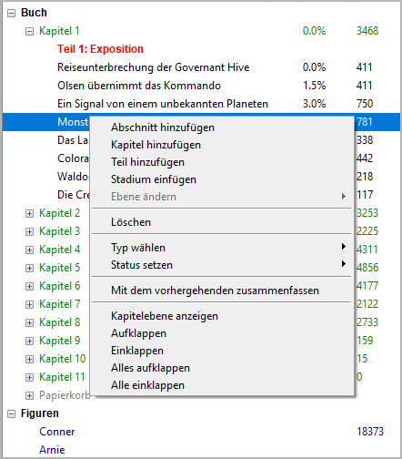
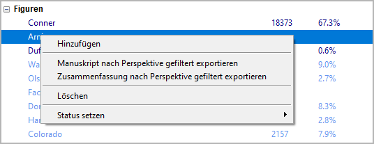
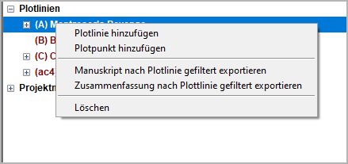

Baumansicht Kontextmenü
When right-clicking on a tree element in the left pane, a context menu opens that belongs to the type of the selected element.
Hinweis
Greyed-out entries are not available, e.g. due to „project lock“.
Buch-Kontextmenüeinräge

Abschnitt hinzufügen
Hinzufügens a new section.
The new section is placed at the next free position after the selection.
The new section has an auto-generated Titel. You can change it in the right pane.
- Eigenschaften of a new section
Normal type
Gliederung completion status
No viewpoint character assigned
No Plotlinie or tag assigned
No date/time set
Kapitel hinzufügen
Hinzufügens a new chapter.
The new chapter is placed at the next free position after the selection.
The new chapter has an auto-generated Titel. You can change it in the right pane.
Teil hinzufügen
Hinzufügens a new part.
The new part is placed at the next free position after the selection.
In the tree, the part is at the same level as the chapters, so the chapters are not children of the part. This is to make it easier to move the part boundaries.
The new part has an auto-generated Titel. You can change it in the right pane.
Stadium einfügen
Inserts a new stage at the next free position at stage level after the selection.
The new stage has an auto-generated Titel. You can change it in the right pane.
The new stage is on the second level by default.
Ebene ändern
Changes the level of a chapter or a stage.
Erste Ebene converts a selected part into a chapter.
Zweite Ebene converts a selected chapter into a part.
Löschen
Löschens the selected tree element and its children.
Teile und Kapitel werden gelöscht.
Abschnitte weerden als „unbenutzt“ markiert und ins „Papierkorb“-Kapitel verschoben.
Deleting a part has no effect on its subordinate chapters.
Deleting a chapter moves its sections to the „Papierkorb“ chapter.
The „Papierkorb“ chapter is created automatically, if needed.
Löscht man das „Papierkorb“-Kapitel, werden auch die enthaltenen Abschnitte unwiederbringlich gelöscht.
Typ wählen
Sets the type of the selected chapter or section. This can be Normal or Unbenutzt.
Bemerkung
Setting the type of a chapter to Unbenutzt will also make its sections Unbenutzt.
Status setzen
Sets the completion status of the selected section.
Hinweis
Select a parent node to set the status for multiple sections.
Mit dem vorhergehenden zusammenfassen
Joins two sections, if within the same chapter, of the same type, and with the same viewpoint.
Neu Titel = Titel of the prevoius section & Titel of the selected section
The section contents are concatenated, separated by a paragraph separator.
Beschreibungs are concatenated, separated by a paragraph separator.
Ziele are concatenated, separated by a paragraph separator.
Konflikts are concatenated, separated by a paragraph separator.
Ausgangs are concatenated, separated by a paragraph separator.
Notizen are concatenated, separated by a paragraph separator.
Figurenlistes are merged.
Schauplatzlistes are merged.
Gegenstandslistes are merged.
Plotlinie assignments are merged.
Plotpunkt associations are moved to the joined section, if any.
Abschnitt durations are added.
Vorsicht
Be aware, there is no „Undo“ feature.
Kapitelebene anzeigen
Hides the sections by collapsing the tree, so that only parts and chapters are visible.
Aufklappen
Shows a whole branch by expanding the selected tree element.
Einklappen
Hides the child elements of the selected tree element.
Alles aufklappen
Shows the whole tree.
Alle einklappen
Hides all tree elements except the main categories.
Figuren/Schauplätze/Gegenstände-Kontextmenüeinträge

Hinzufügen
Hinzufügens a new character/location/item.
The new element is placed after the selected one.
The new element has an auto-generated Titel. You can change it in the right pane.
The status of newly created characters is minor.
Manuskript nach Perspektive gefiltert exportieren
Exportierens a Manuskript with the sections that have the selected character as viewpoint.
Zusammenfassung nach Perspektive gefiltert exportieren
Exportierens the descriptions of the sections that have the selected character as viewpoint.
Löschen
Löschens the selected character/location/item.
Vorsicht
Be aware, there is no „Undo“ feature.
Status setzen
Sets the selected character’s status. This can be major or minor. Major characters are highlighted in the Baumansicht.
Bemerkung
The character status is only for visual distinction. It has no influence on the program functions. Niemalstheless kann man use it to mark viewpoint characters or characters with their own Plotlinien.
Hinweis
Select the Figuren root node to set the status for all characters.
Plotlinien-Kontextmenüeinträge

Plotlinie hinzufügen
Hinzufügens a new Plotlinie
If a Plotlinie is selected, the new item is placed after the selected one.
Otherwise, the new Plotlinie is placed at the last position.
The new Plotlinie has an auto-generated Titel. You can change it in the right pane.
Plotpunkt hinzufügen
Hinzufügens a new Plotpunkt
If a plot point is selected, the new plot point is placed after the selected one.
If a Plotlinie is selected, the new plot point is placed at the last position.
Otherwise, no new plot point is generated.
The new plot point has an auto-generated Titel. You can change it in the right pane.
Manuskript nach Plotlinie gefiltert exportieren
Exportierens a Manuskript with the sections that belong to the selected Plotlinie.
Zusammenfassung nach Plottlinie gefiltert exportieren
Exportierens the descriptions of the sections that belong to the selected Plotlinie.
Löschen
Löschens the selected Plotlinie/plot point.
Vorsicht
Be aware, there is no „Undo“ feature. If you delete a Plotlinie, all its plot points will be gelöscht, too.
Projektnotizen-Kontextmenüeinträge
Projektnotiz hinzufügen
Hinzufügens a new Projektnotiz
If a Projektnotiz is selected, the new Projektnotiz is placed after the selected one.
Andernfalls, the new Projektnotiz is placed at the last position.
The new Projektnotiz has an auto-generated Titel. You can change it in the right pane.
Löschen
Löschens the selected Projektnotiz.